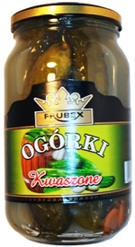
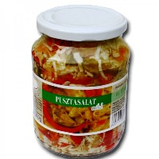

|
|
|
typisch ungarische Salate |
| |
|
Gurkensalat /
Uborkasaláta |
|
|
Rezept und Zubereitung siehe im
Video....
|
Wir
haben YouTube nach einem akzeptablen Video für die Zubereitung
von Gurkensalat auf ungarische Art durchsucht und fanden nur
in einem einzigen Video das, was man in Ungarn als Grundrezept
für den Gurkensalat kennt. Alle anderen Darsteller versuchen
den Zuschauern etwas eigenartiges vorzugaukeln, machen Werbung für ihre
Bücher und Homepages, machen ihren Gurkensalat mit fremdartigen
Änderungen ganz anders oder erzählen einiges,
die sie so oder so als Halunken entlarven. Beispielsweise die
geschäftstüchtige, vermeidlich ungarnstämmige Dame in den USA, die etwa ab 2' 55"
von der Paprikadose abliest, die
Großstadt
.
Lt. Google liegen beide Städte 172 km voneinander
entfernt. ...und dann hat sie noch 3 YouTube Freunde, die sich zum Wort melden und behaupten, nur sie
könne Gurkensalat echt ungarisch zubereiten, wie bei Mama -
andere ersparen einen Kommentar. Wir denken, sie müsste diese Mama sein, die die Texte für die
3 YouTube Freunde schrieb...
Im
folgenden Video wird Gurkensalat typisch ungarisch zubereitet,
allerdings ist dieses Video eine Mixtur und eigentlich für
Kartoffelpaprikasch gedacht. Vielleicht hätte man lieber den
Teil mit dem Gurkensalat in ein getrenntes Vorführvideo schneiden müssen. Wie auch
immer, im folgenden Video sieht man, wie Gurkensalat in Ungarn
ganz einfach zubereitet wird.
Rezept und deutsche Beschreibung unter dem Video -
Gurkensalat ab 2 Minuten und 45 Sekunden:
|
|
|
| |
GURKENSALAT REZEPT -
wie im Video ab 2 Minuten 45 Sekunden:
Zutaten: 2 Salatgurken, 2
Knoblauchzehen, Salz, Zucker, Salatessig,
Zubereitung: Die Gurken reinigen/spülen,
schälen, in Scheiben schneiden, leicht salzen, umrühren. Das
Salz soll mindestens eine halbe Stunde lang wirken, bevor man
den Gurkensaft auspresst.
Beize: In
einem Salatschüssel 200 ml Wasser, 2 EL Salatessig, 2 TL
Zucker und evt. eine Priese geschnittene Estragonblätter verrühren
und unter gelegentlichem Rühren folgende
Zutaten dazu mischen: 2 TL Salz, 2 geriebene Knoblauchzehen,
1 TL Paprikapulver und die ausgepressten Gurkenscheiben.
Geübte erkennen den
richtigen Geschmack der Beize und bei der
Zubereitung probiert man laufend, ob vom Essig, Salz oder
Zucker noch etwas fehlt.
Übrigens:
die Beschreibung hier bezieht sich auf das Video. Paprika- und
Pfefferpulver gehören nicht zum Grundrezept von Gurkensalat.
Tipps: Je länger das Salz den Gurkensaft
entzieht (kann einen halben Tag lang ziehen), umso weniger
knackig, dafür aber feiner werden die Gurken. Sie benötigen
etwas Geduld, bis der Zucker in der Salattunke
vollständig aufgelöst wird, aber diese Zeit sollten Sie
unbedingt nehmen. Hier und da kommen gleich eine Priese geschnittene Estragonblätter oder manche verwenden gleich Estragonessig.
Statt Estragon kann man auch Dill untermischen. Viele schneiden
dünne Scheiben von roten bzw. lila Zwiebeln oder
Schalotten in die
Beizflüssigkeit. Es wird zwar kein Gurkensalat mehr, aber
viele schneiden Tomaten und Paprika dazu und lassen die
Beizflüssigkeit kurz wirken.
Am Tisch nimmt jeder seine
gewünschte Portion aus dem Salatschüssel. Wenn nicht schon
geschehen, eine Priese gerebelter Estragon bereichert den
Geschmack individuell auch nachträglich. Viele toppen einen Batzen
Sauerrahm darauf, bevor man den Salat mit Kräutern der
Provence, Estragon, Dill o.ä. bestreut. Ein paar Schuss
Worcester Sauce sorgt für die raffinierte Note, die gut zu Schnitzel, Gulasch- und
Fischgerichten passt.
|
| |
| |
|
Sauerteiggurke /
Kovászos uborka |
|
|
Sauere Gurken kannte man schon vor rd. 8.000 Jahren in
Mesopotamien, mindestens zwei Jahrtausende vor der Biblischen Schöpfung,
trotzdem werden sie im Alten Testament als eigene Errungenschaft
gepriesen. Ist das
der Grund für die gezielte Vernichtung historischer
Beweistücke im Nahen Osten zu Anfang des 21. Jahrhunderts?
Die Sauerteiggurke ist eine in Ungarn
beliebte Variante der Salz-Dill
Gurken, fast identisch mit den Spreewaldgurken, die von den Polen abgekupfert
wurden, bevor Polen großflächig zu Deutschland kam. Die
polnischen und die Spreewaldgurken waren ursprünglich nach einer ca.
sechswöchiger Gärperiode verzehrfertig. Die Polen kennen
beide Methoden, im Spreewald werden die Gurken einfacher,
immer ohne Zusatz von Sauerteig eingeweckt und vergoren. Den
geschmacklichen Unterschied, ob die Gurken mit oder ohne
Sauerteig zubereitet wurden, können die wenigsten
feststellen, weil von Haus zu Haus unterschiedlich gewürzt
wird.
Die Spreewaldgurken werden in
letzter Zeit in Massenfertigung industriell hergestellt.
Dabei werden die Gurken ohne Gärung in einem einstündigen Dampfbad (in
Gasdampf mit geheimer Zusammensetzung) fertiggekocht. Was
man so in sich zwingt, ist ein Firmengeheimnis. Es bleibt zu
hoffen, dass diese Geheimnistuerei eines Tages nicht zu
einem Lebensmittelskandal führt. |
Die polnischen Gurken sind unter der Bezeichnung Polskie
Ogórki weltweit beliebt, in Nordamerika gut bekannt, in
Deutschland kaum, weil man hierzulande denkt, die
Spreewaldgurken wären eine deutsche Erfindung. Neulich
beantragte man sogar ihre Anerkennung als Weltkulturerbe.
Schön ist es, dass die Unesco (eine UNO-Organisation) für solche Ehrungen
Geld bereitstellt, wenngleich ca.
15% der Erdbevölkerung unterrnährt ist und jährlich nahezu
10 Millionen an Hunger sterben. Auch für diese Menschen sind
diverse UNO-Organisationen zuständig.
Die
Ungarn sind mit ihren "kovászos" Sauerteiggurken
so ziemlich auf dem Holzweg. Nicht einmal das Wort kovász ist ungarisch, sondern
slawisch-polnischen Ursprungs, womöglich aus einer Zeit, als
die Polen und Ungarn einige gemeinsame Könige hatten. Das
war noch vor dem Einfall der Türken in Ungarn. In der ersten
verlorenen Schlacht gegen die Türken im Jahre 1526 bei
Mohács im Süden von Ungarn fiel der junge König der Ungarn
Lajos II, der der letzte König der Ungarn aus Polen war. Die polnischen Sauerteiggurken sind
weltweit beliebt und z.B. so erhältlich, wie am Bild rechts
dokumentiert. In Nordamerika werden sie "leaven cucumbers"
(=Sauerteiggurken) genannt. |
 |
Viele mögen
und trinken die Flüssigkeit, in der die Sauereiggurken
vergoren werden. Das geht solange gut, bis die
Sauerteiggurken nach althergebrachter Methode, wie unten im
Video vorgeführt, aus natürlichen Zutaten zubereitet und nicht chemisch nachgeahmt
werden, wie immer öfter bei der industriellen Massenproduktion. Einen
Sauerteigtrunk bieten viele Bäckerläden in Deutschland
an - ein Abfallprodukt zu unverschämt hohem Preis, das damit
begründet wird (es steht auf vielen Etiketten und sogar
Broschüren geschrieben), dass der Sauerteigtrung, oft
Brottrunk genannt, Krebs heilt. Da wissen geschäftstüchtige
Bäcker scheinbar mehr, als die Mediziner. Unsere Empfehlung:
kaufen Sie original polnische Sauerteiggurken und wenn die
Flüssigkeit aus der Flasche Ihnen zu sauer mündet, dann
verlängern Sie es mit Wasser oder was Ihnen dazu gerade einfällt.
|
Dass Sauerteig die Grundlage für ein beliebtes
Volksgetränk sein kann, beweist die Beliebtheit von Kwas bei
den Russen, Weißrussen, Ukrainern und Polen. Was man in den
Plastikflaschen, wie am Bild rchts bekommt, ist allerdings
ein Imitat - Sodawasser mit Geschmackstoffen zubereitet.
Kwas kannten schon die alten Römer! Kwas (=kovász auf
Ungarisch und Sauerteig auf Deutsch)wird aus Malz und
Roggen im Wasser mithilfe von Sauerteigbrot leicht vergoren. Dabei entsteht etwas
Alkohol und Kwas erinnert an Malzbier. Im Handel bekommt man
Kwas ohne und mit einem Alkoholgehalt von bis zu 1,5%, das sogar von
nicht mehr ganz kleinen
Kindern gerade noch vertragen wird. Zuhause gehören Hefe und
auch Zucker zu den Zutaten bei der Zubereitung von Kwas.
Damit kann man den Alkoholgehalt deutlich erhöhen. Es
schmeckt wie Bier und ist bei der sommerlichen Hitze ein
besserer Durstlöscher, als unser Bier. Kwas wird mancherorts
als Bier angeboten. Für die häusliche Zubereitung bekommt
man in Russland ein Kwaskonzentrat, womit auch Anfänger
zurecht kommen.
Übrigens: dem Kwas
entsprechend werden in Russland ähnlich beliebte
Durstlöscher auch aus Weißkohl zubereitet. Auf solche
Beschreibung möchten wir hier verzichten. Wer sich dafür
interessiert, sollte seine Fantasie bei der Zubereitung von
Sauerkraut und Pusztasalat (Beschreibung unten) baumeln
lassen.
Kwas und vergleichbare
Produkte erhält man in Deutschland u.a. bei der
Lebensmittelkette
. |
 |
|
Sauerteiggurke 1 /
Kovászos uborka 1 |
|
|
| Sauerteiggurken produziert man unter häuslichen
Verhältnissen so, wie im
folgenden Video auf Ungarisch erklärt wird. Zutaten und eine
deutsche Beschreibung der
Zubereitung siehe unter dem Video: |
| |
|
|
| |
Zutaten
für ein 4,5 Liter Eimachglas, wie im Video:
2,5 kg krumme Gurken
- wichtig: nur knackig frisch vom Wochenmarkt oder noch besser
direkt vom Bauer,
1 Kopf Knoblauch,
2
Weinblätter,
1 Dillstiel,
6 TL Salz,
1 Scheibe
Sauerteigbrot.
Zu den Zutaten im Video:
mit deutlich weniger Knoblauch geht es auch. Weinblätter haben
nicht alle aus dem eigenen Garten. Ähnlich geschmacksfördernd
wirken frische Blätter von Kirsche, Weichselkirsche und
Spinat, oder ein Stückchen Kirschenzweig. Andere verwenden
wenige Pfeffer- und/oder Koreanderkörner im Sud.
Zubereitung: Brotscheibe
im Toaster leicht anrösten. Gurken waschen, beide
Enden abschneiden und
prüfen, ob sie bitter schmecken - sonst wären sie
ungeeignet,
wie in den meisten Lebensmittelgeschäften, wo man sie selten bekommt, weil die guten von den Gurkenfabriken
aufgekauft werden, damit man zuhause nicht was besseres ohne
Konservierungsstoffe und günstiger herstellen kann - von wegen
Geschäftsinteresse - am besten im Biomarkt oder beim Bauer bestellen!
Zuerst das Weinblatt auf dem
Glasboden ausbreiten und den Dill darauflegen. Die Gurken der Länge
nach beiderseits leicht einschneiden (nicht teilen, das wird im Video nur für
die Demonstration der Qualität gemacht, am linken Teller sieht
man die bessere Gurkensorte), im Glas vertikal schichten und zuletzt die
Brotscheibe darauf legen. In 2 Liter
Wasser 6 gehäufte Teelöffel Salz aufkochen und ins Glas füllen, dass die
Gurken
bedeckt sind. Fünf Tage lang
in der Sonne, z.B. am Fensterrand reifen lassen. Um Kleckereien zu vermeiden,
sollte das Glas in einem Schüssel stehen und man sollte das
Salzwasser laufend nachfüllen, was aus dem Glas heraus gärt. Wenn die Gurken
vergoren sind, in ein
anderes
Gefäß umfüllen, in das - außer
Brot - alles
wieder eingefüllt wird. Dabei sollten die Gurken nicht mit
der
Hand angefasst werden. Gläser abschließen und kalt
lagern. |
| |
| |
| |
|
Sauerteiggurke 2 /
Kovászos uborka 2 |
|
|
-
Hausrezept der
Donauschwaben
-
|
|
Zutaten und Zubereitung in einem 5 Liter Glas: |
- 1 Bund Dill auf dem Glasboden
ausbreiten.
- Eine Schicht geschälte und in Scheiben
geschnittene, möglichst große und alte Kartoffeln darüber legen.
- Frisch geerntete Gurken
waschen, an den Enden einritzen und darüber legen.
- Eine Schicht in Scheiben
geschnittene Kartoffeln darüber legen.
- 1 Bund Dill, möglichst
mit starten Stielen darüber ausbreiten.
- Das Glas mit lauwarmem
Salzwasser (1 EL Salz pro Liter) auffüllen.
- Alles mit einem kleinem
Teller beschweren, dabei einmal leicht nach unten drücken,
dabei das Glas leicht schütteln, damit alle Luftblasen
nach oben entweichen.
- Das Glas bedecken, jedoch nicht abschließen. Am besten
auf eine sonnigen Stelle, z.B. auf Fensterbank stellen,
jedoch in einer tiefen Schale oder Topf, damit die
Flüssigkeit bei der Gärung nicht herumfließt.
- Die Gurken sind nach 3 Tagen
ein Genuß - kühl lagern!
|
|
Die Flüssigkeit
bleibt immer schimmelfrei klar und ist gekühlt ein
angenehmes Erfrischungsgetränk. |
| |
| |
| |
|
Sauergemüse aus dem
Fass / Hordós savanyúság |
|
|
-
Hausrezept der Donauschwaben -
|
Flüssigkeit:
12
Liter Wasser, 3 Liter Essig (10%-ig), 1 kg Zucker, 360 g Salz, 30
Lorbeerblätter,
30 Sauerkirschblätter, 6 handvoll Senfkörner, 40
Pfefferkörner, 30 handvoll
Meerrettichwurzel, 1 handvoll Dill, 75 g Weinsteinsäurepulver
(aus der
Apotheke), 30 g Salicyl (aus der Apotheke).
Zusammenrühren
– Den mindestens 25 Liter großen Fass darf man
anfangs mindestens 5 Tage
lang nicht verschließen.
Gemüse:
Vor dem Schließen des Fasses kann soviel von
folgenden Gemüsesorten in den Fass gefüllt werden,
wie von der Flüssigkeit bedeckt
bleibt: Zwiebeln, Knoblauch, Blumenkohl, Gurke, Paprika, noch
grüne, nicht ganz
reife Tomaten, kleine Kürbisse, Weißkohl, mit
Rotkohl gefüllte Paprika,
zerstückelte Sellerieknolle.
Das
Gemüse bleibt 2-3 Jahre lang erhalten, beinahe solange
kann der Fass mit
frischem Gemüse nachgefüllt werden - immer von der
Flüssigkeit bedeckt. |
| |
| |
| |
|
Sauere Kohlköpfe /
Savanyú káposzta |
|
|
-
Hausrezept der Siebenbürger Sachsen und Donauschwaben -
|
Kohlköpfe
etwa 6 Wochen vor Weihnachten einlegen, damit man sie zu Weihnachten, Ostern und
noch viele Wochen danach (je nach Lagerungsverhältnissen gut
6 Monate lang) genießen kann.
Das folgende Video zeigt die Zubereitung unter häuslichen
Verhältnissen:
|
| |
|
|
|
Zubereitung
(in einer 50-Liter Tonne): Ganzen
Kohlköpfen die Stiele
aushöhlen. Den Tonnenboden mit folgenden Kräutern, Obst und Gewürzen
belegen: viel Salz, 1 Bund Bohnenkraut, 1 Bund Dill, 1
Maiskolbe (muss nicht sein, evtl. mit Maismehl ersetzen), 1
gespaltene Apfelquitte (evtl. Birne oder Apfel), 1 Zweig von
Weichselkirsche, 3-4 Lorbeerblätter, 30 Pfefferkörner, evtl.
2-3 zerbrochene Peperoni. 2-3 mittelgroße, zerspaltete
Meerrettichwurzel streut man später zwischen die Kohlköpfe in
der Tonne (nicht nur das Salz, vor allem der Meerrettich
konserviert die Kohlköpfe).
Die
ausgehöhlten Kohlköpfe überreichlich mit Salz füllen, in der
Tonne schichten (unten die größeren Köpfe für die Krautwickel
bzw. Kohlroulade zur Weihnachtszeit), Meerrettichwurzel
dazwischen streuen. Die Tonne 2-3 Tage lang so stehen lassen im Keller
oder auf einem kühlen Balkon (Nordseite ist ideal), dann mit Wasser
auffüllen und
die Kohlköpfe in der Tonne vor dem Verschließen (nicht
luftdicht!) mit einem Abstandhalter (Stück Holz oder Stein)
beschweren, damit die Kohlköpfe vom Wasser vollständig bedeckt
sind.
Gut
lüften ist angesagt im Keller.
Nach 2 Wochen durch einen Schlauch in die Flüssigkeit
pusten (zum Rühren), gelegentlich, am besten alle 2-3
Tage pusten. Nach ca. 6 Wochen
ist der Sud fertig vergoren. |
|
|
|
|
|
|
|
Sauerkraut /
Savanyú káposzta |
|
|
|
- Hausrezept der Donauschwaben - |
| |
Zutaten: 10 g
Salz
(Steinsalz ohne Jodzusatz, kein Meeressalz!) auf 1 kg Weißkohl.
Zubereitung:
Weißkohl hobeln, salzen und stampfen. In Einmachglas
füllen, Glas verschließen.
In 3-4 Wochen fertig vergoren.
Tipp: so einfach geht es zu Hause
ohne Chemie - zudem
preisgünstiger als die Dose aus dem Supermarkt. Zum Sauerkraut gehört nur
Salz. Das Salz muss Steinsalz ohne jodfrei sein, weil Jod das
Kraut angreift und den Geschmack verdirbt. Manche mögen etwas würzig.
|
Warum selbst herstellen: Sauerkraut, das man in
den Lebensmittelgeschäften bekommt, wird heutzutage industriell
und nicht durch die Vergärung von Milchsäure, sondern so
preisgünstig es geht in einem Schnellverfahren mithilfe von Essig,
Zitronensäure unter Zugabe von Geschmacks- und Süßstoffen
hergestellt. Das natürliche Aroma und der Geschmack bleiben dabei
auf der Strecke, je nach Fabrikationsmethode verschwindet sogar
ein Großteil des im Winter besonders lebensnotwendigen Vitamin C.
Was auch immer in der Werbung hochgelobt wird, hat einen
künstlichen Geschmack. Preisgünstig ist nicht immer gut.
Weinsauerkraut mag für Ahnungslose interessant klingen, den
Geschmack nach dem schwefelhaltigen Weinstein ist nicht jedermanns
Sache und ist gesundheitlich zumindest fraglich. Es gibt gewaltige
Unterschiede im Geschmack zwischen natürlich, nach einem
Jahrtausende lang bewährten Verfahren hergestellten Sauerkraut und
dem, was man im Supermarkt mehr oder weniger billig bekommt -
manchmal sogar viel teurer, als man denkt und die
tatsächlichen Herstellungskosten den hohen Preis rechtfertigen würden.
|
Mögliche Zutaten für ein 5 Liter Glas
|
|
Sauerkraut pur |
Variante 1 |
Variante 2 (siehe Video) |
Variante 3 |
4 kg Weißkohl
40 g Salz (ohne Jod) |
4 kg Weißkohl
40 g Salz (ohne Jod)
4 Prise Schwarze
Pfefferkörner |
4 kg Weißkohl
40 g Salz (ohne Jod)
4 Prise Schwarze
Pfefferkörner
4 Prise Korianderkörner
4 Prise Kümmel
4 Lorbeerblätter
2-4
Peperoni
evtl. 1/4 Apfel |
4 kg Weißkohl
40 g Salz (ohne Jod)
1 Bd. Bohnenkraut
1 Bd. Dill |
|
| |
|
Wichtige Hinweise für die Zubereitung:
Im folgenden Video werden die wichtigsten Schritte gezeigt. Was
man im Video nicht sieht, aber wichtig ist...... Ob man in einem
Fass größere Menge produziert oder in einem 5 Liter Glas, wie im
Video, das Endprodukt sollte gleich schmecken. Beim Befüllen des
Behälters bedeckt man zuerst den Boden mit einigen Kohlblättern
und zuletzt wird das gehobelte und gesalzene Kraut auch von oben genauso bedeckt. Wichtig
ist das Stampfen Stück für Stück, wie im Video ersichtlich. Dabei soll das Kraut
soviel Wasser lassen, wie nur möglich, bevor die nächste Schicht
gelegt wird. Anfänglich hat man wenig
Kohlflüssigkeit, später immer mehr. Man sollte vor allem bei den
unteren Schichten längere Pausen einlegen und danach mit dem Stampfen
fortfahren. Je dünner die einzelnen Schichten sind, umso besser
kann man die Gewürze (wenn überhaupt) verteilen. Das Salz greift
die Haut an, wer das nicht verträgt, sollte Gummihandschuhe
verwenden. Der Apfel kommt ganz zum Schluss oben darauf (wenn
überhaupt), den soll man am besten in Scheiben schneiden und ein
bisschen in das Kraut eindrücken. Das Gefäß mit Kohlblättern
bedecken und mit einem Gewicht aus Porzellan, Steingut oder Glas
beschweren, sodass alles unter der Salzlake bleibt bevor man das
Gefäß schließt. Nun beginnt die Gärung, die mindestens 3-4 Wochen
lang dauert. Viele benutzen einen Schlauch und pusten Luft tief in
die Flüssigkeit, damit die Kohlflüssigkeit in Bewegung kommt und
dabei eine gleichmäßige Streuung behält. Wir möchten vom Schlauch
abraten. Einerseits können durch die Atemluft auch schlechte
Bakterien in das Lebensmittel gelangen, andererseits kommt dadurch
Luft in die Flüssigkeit, die an einzelnen Stellen im
Gefäß die Gärung stören kann. Es ist besser für die
gleichmäßige Konsistenz der Salzlake, wenn man
das Gefäß während der Gärung gelegentlich, aber regelmäßig ein
wenig schüttelt. |
| |
Video über die häusliche Zubereitung:
|
|
| |
| |
-
gesund, wie kein anderer Salat, sagt man
-
|
Das folgende Video zeigt die häusliche Zubereitung für den
Wochenmarkt.
Beschreibung mit Zutaten und Zubereitung unter dem Video:
|
|
|
| |
Zutaten: ingesamt 10 kg gartenfrisches Gemüse
aus Weißkohl, Gurken, Paprikaschoten, Möhren und Zwiebeln in
einem unbestimmten Verhältnis zueinander, etwa so, wie im
Video vorgeführt. - Unser Beispiel für die Gemüsemengen im
Video: 3,5 kg Weißkohl, 3 kg Gurken, 2 kg Paprikaschoten, 0,5
kg Möhren, 1 kg Zwiebeln, 1 Pkg Salicyl, 1 kg Zucker, 1 l
Essig (10%), 7 gestrichene EL Salz. - Neulich wird auch
Blumenkohl beigemischt, der nach unseren Erkenntnissen eher dem Geschäft
dient.
Zubereitung: Das
Gemüse hobeln oder kleinschneiden, wie im Video gezeigt.
Salicyl, Zucker, Essig und Salz über das Gemüse streuen, alles
ordentlich durchmischen und übernacht zusammenreifen lassen.
Dabei entsteht zusätzliche Flüssigkeit, die man am nächsten
Tag mit dem Gemüse zusammen in Weckgläsern füllt. Keine Zugabe
von Wasser! Vorsicht beim Verschluß der Gläser: etwa 2 Tage
lang entwickeln sich Gase, die entweichen sollten, bevor man
die Gläser verschließt. Aus diesem Grund sollte man die oberen
ca. 2 cm erst nach 2 Tagen auffüllen und die Gläser dann verschließen.
Tipps zum Konservierungsmittel: im Video
wird Salicyl verwendet, wie schon zu Uromas Zeiten.
Neulich verwenden viele Weinsteinsäure (E 334) und oder auch
Natriumbenzoat (E 212). Salicyl steht in der Kritik wegen
möglicher Nierenschädigung und weil manche allergisch mit
Atemwegsreaktionen auf Salicyl reagieren. Weinsteinsäure ist
nach heutigen Kenntnissen unbedenklich. Natriumbenzoat ist ein
Antioxydanz und sorgt bereits in kleinen Mengen dafür, dass
das Gemüse seine Farbe und knackge Frische behält. - Die
genannten Konservierungsmittel bekommt man in Apotheken, wo man auch
über die benötigte Menge informiert wird. Manche Drogerien
bieten die genannten Konservierungsmittel ebenfalls an. |
| |
|
 |
|
<<<
mild Puszta Salat
scharf >>> |
| |
Wir machen hier keine Werbung! Nach unseren Erkenntnissen
bekommt man in Deutchland von
aus Naumburg
die beste Ware zu einem akzeptablen, keinesfalls
überhöhten Preis, wie dies bei den meisten deutschen Onlinehändlern von
ungarischen Lebensmitteln der Fall ist. Uns gefällt auch, dass er
per DHL liefert und wir deswegen nicht kilometerweit fahren
müssen, wenn wir einmal verhindert sein sollten, zuhause auf die Lieferung
zu warten. |
 |
|
Krautsalat /
Káposztasaláta |
|
|
Zum
Braten jeder Art, so z.B. zum Wiener Schnitzel empfiehlt sich der
Krautsalat als Beilage, wie im folgenden Video
zubereitet. Dieses Rezept ist weit verbreitet in Ungarn und wird
in vielen Restaurants ähnlich serviert. Zutaten und
Beschreibung der Zubereitung nach dem Video:
|
|
| |
Zutaten:
500 g Rotkohl, 500 g Weißkohl, 2 rote Zwiebeln.
Zutaten für die Marinade: 3 EL Speiseöl, 2 EL
Weinessig, Salz, Puderzucker, 1 EL Senf, 2 TL gemahlener Kümmel
Zubereitung:
Weiß- und Rotkohl hobeln, 2 Minuten lang blanchieren und abseihen. Zwiebeln in Scheiben schneiden, Kraut
dazu fügen. Alle Zutaten für die Marinade mischen und in die Kraut-Zwiebelmischung rühren.
Einige Stunden lang in den Kühlschrank stellen und kalt servieren.
Tipp: Die hier vorgeführte Marinade ist ein
Grundrezept, das anders zusammengesetzt werden kann, aber
Essig, Salz, Zucker und Kümmel
gehören immer dazu.
|
| |
| |
|
Zwiebelsalat / Ecetes
hagymasaláta |
|
|
Damit das Schnitzel besser mundet und nicht zu
trocken ist, wird es meistens mit einer dem
ähnelnder Sauce garniert. Dem gleichen Zweck dient
auch der Zwiebelsalat, der in ganz Ungarn, aber auch in
Deutschland gut bekannt ist.
Zutaten: 5-6 kleine bis mittelgroße Zwiebeln, 1 TL Salz,
2 EL Zucker, 2 EL Essig, evtl. 2-3 Knoblauchzehen.
Zubereitung: Zwiebeln reinigen und quer in Ringe
schneiden, idealerweise mit Gemüsehobel in dünne Scheiben. Die Zwiebeln in einem Topf mit soviel Wasser
übergießen, dass die Zwiebelringe bedeckt sind. Salz und
Zucker dazu mischen und langsam kochen, bis alle Zwiebelringe
glasig werden. Übernacht an einer kühlen Stelle
aufbewaren.
Vor dem Servieren, noch besser 1-2 Stunden vorher mit wenig Essig abschmecken.
Viele mögen diesen Salat mit Knoblauch, der nach dem Kochen
fein gerieben in den heißen Sud kommt.
Tipp für Norddeutschland: Achten Sie darauf,
dass die Zwiebeln vom Feld kommen und nicht allzu feucht sind.
Das erkennt man beim Kauf bereits am Geruch. Solche Zwiebeln aus dem
Supermarkt, auch mit Biosiegel schmecken mehr oder weniger
nach Düngemittel aus dem Gewächshaus und sind für diesen Salat
nicht geeignet.
|
| |
| |
|
Kartoffel-Zwiebelsalat / Ecetes krumplisaláta |
|
|
|
Wir verzichten in diesem Fall auf die Wiedergabe einer Rezeptur. Hier
wird alles genauso zubereitet, wie beim Zwiebelsalat, der lediglich
durch die Zugabe von getrennt gekochten Kartoffelscheiben aus
festkochenden Kartoffeln ergänzt wird. |
| |
| |
| |
| |
Ungarn-Tourist Team

|
| |
 |
| |
|


 Sie
wollen endlich mal ein Gulasch nach
Originalrezept in Budapest genießen. Dann nichts wie hin.
Sie
wollen endlich mal ein Gulasch nach
Originalrezept in Budapest genießen. Dann nichts wie hin.